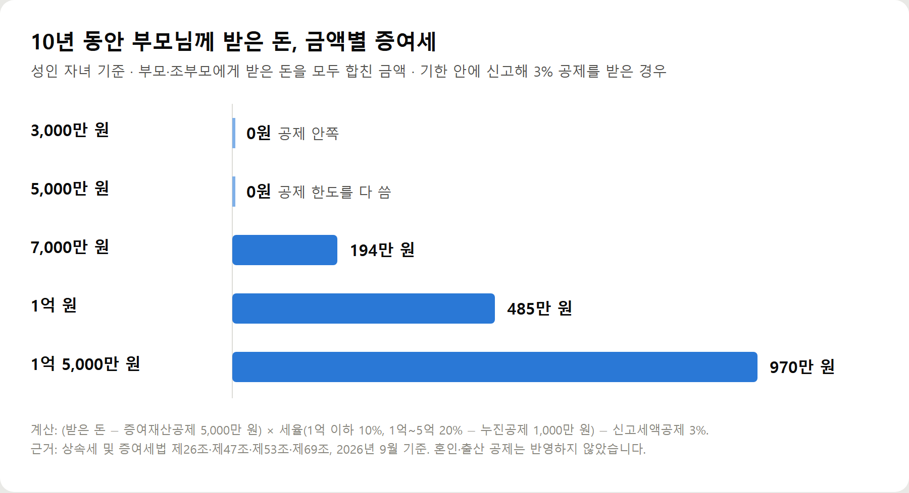

<meta charset="utf-8">
<title>추석 용돈 증여세, 금액별 계산표 — 나의 투자 그리고 행복한 여행</title>
<meta name="description" content="추석에 부모님께 받은 용돈·현금, 증여세 대상일까? 10년 합계 5천만원 공제와 금액별 증여세 계산표, 신고기한 정리">
<meta name="viewport" content="width=device-width, initial-scale=1">
<link rel="canonical" href="https://worldtraveler1.tistory.com/118">
<link rel="preconnect" href="https://fonts.googleapis.com">
<link rel="preconnect" href="https://fonts.gstatic.com" crossorigin>
<link rel="stylesheet" href="https://fonts.googleapis.com/css2?family=Hahmlet:wght@400;600;800&family=IBM+Plex+Mono:wght@400;500&family=IBM+Plex+Sans+KR:wght@300;400;500;600&display=swap">

<style>
  :root{
    --paper:#F2EEE6;--surface:#FAF8F3;--surface-2:#E7E1D5;
    --ink:#191510;--ink-2:#4A4235;--ink-3:#7D7364;
    --line:#D6CEBF;--line-soft:#E4DDD0;--accent:#B06A15;--accent-bright:#C2761A;
    --up:#E5484D;--down:#3B82F6;
    --f-display:"Hahmlet",'Nanum Myeongjo',"Apple SD Gothic Neo",serif;
    --f-body:"IBM Plex Sans KR","Apple SD Gothic Neo","Malgun Gothic",sans-serif;
    --f-mono:"IBM Plex Mono","SFMono-Regular",Consolas,monospace;
    --pad:clamp(20px,5vw,64px);
  }
  @media (prefers-color-scheme:dark){
    :root:not([data-theme="light"]){
      --paper:#0B1120;--surface:#121A2C;--surface-2:#1A2439;
      --ink:#E9EEF7;--ink-2:#A9B5C9;--ink-3:#72809A;
      --line:#26314A;--line-soft:#1D2739;--accent:#E8A33D;--accent-bright:#F0B45C;
    }
  }
  *{box-sizing:border-box;}
  body{margin:0;background:var(--paper);color:var(--ink);font-family:var(--f-body);
    font-weight:300;font-size:1rem;line-height:1.75;-webkit-font-smoothing:antialiased;}
  a{color:inherit;}
  img{max-width:100%;height:auto;}
  .wrap{max-width:760px;margin:0 auto;padding-inline:var(--pad);}
  .nav{position:sticky;top:0;z-index:20;background:color-mix(in srgb,var(--paper) 88%,transparent);
    backdrop-filter:saturate(180%) blur(12px);border-bottom:1px solid var(--line);}
  .nav-in{display:flex;align-items:center;justify-content:space-between;height:58px;}
  .brand{font-family:var(--f-display);font-weight:600;font-size:1rem;letter-spacing:-.02em;text-decoration:none;}
  .back{font-family:var(--f-mono);font-size:.72rem;color:var(--ink-3);text-decoration:none;}
  .article{padding-block:clamp(40px,7vw,72px) clamp(56px,9vw,96px);}
  .eyebrow{font-family:var(--f-mono);font-size:.68rem;letter-spacing:.16em;text-transform:uppercase;
    color:var(--accent);margin:0 0 14px;}
  h1{font-family:var(--f-display);font-weight:800;font-size:clamp(1.6rem,4.4vw,2.3rem);
    line-height:1.3;letter-spacing:-.03em;margin:0 0 16px;}
  .byline{font-family:var(--f-mono);font-size:.72rem;color:var(--ink-3);
    padding-bottom:24px;border-bottom:1px solid var(--line);margin-bottom:32px;}
  h2{font-family:var(--f-display);font-weight:600;font-size:1.25rem;letter-spacing:-.02em;margin:42px 0 14px;}
  h3{font-family:var(--f-display);font-weight:600;font-size:1.05rem;letter-spacing:-.02em;
    margin:30px 0 10px;padding-top:14px;border-top:1px solid var(--line-soft);}
  h3 .code{font-family:var(--f-mono);font-size:.7rem;font-weight:400;color:var(--ink-3);margin-left:6px;}
  p{margin:0 0 18px;color:var(--ink-2);}
  ul.checks{margin:0 0 18px;padding-left:20px;color:var(--ink-2);}
  ul.checks li{margin-bottom:8px;font-size:.94rem;}
  table{width:100%;border-collapse:collapse;font-size:.88rem;margin-bottom:8px;}
  th{font-family:var(--f-mono);font-size:.66rem;letter-spacing:.06em;text-transform:uppercase;
    color:var(--ink-3);text-align:right;padding:8px 6px;border-bottom:1px solid var(--line);}
  th:first-child{text-align:left;}
  td{padding:10px 6px;border-bottom:1px solid var(--line-soft);color:var(--ink-2);}
  td.num{font-family:var(--f-mono);text-align:right;font-variant-numeric:tabular-nums;}
  td.up{color:var(--up);} td.down{color:var(--down);}
  .scroll{overflow-x:auto;}
  figure{margin:22px 0;}
  figure img{display:block;border-radius:3px;background:var(--surface-2);}
  figcaption{margin-top:8px;font-family:var(--f-mono);font-size:.68rem;color:var(--ink-3);text-align:center;}
  .note{margin-top:34px;padding:16px 18px;border-left:3px solid var(--accent);
    background:var(--surface);border-radius:0 3px 3px 0;}
  .note p{margin:0;font-size:.85rem;color:var(--ink-3);}
  .foot{border-top:1px solid var(--line);background:var(--surface);padding-block:30px 38px;}
  .foot p{margin:0;font-size:.8rem;color:var(--ink-3);}
</style>

<nav class="nav">
  <div class="wrap nav-in">
    <a class="brand" href="../index.html">나의 투자 그리고 행복한 여행</a>
    <a class="back" href="../index.html#stocks">← 시황으로</a>
  </div>
</nav>

<main class="wrap article">
  <p class="eyebrow">Market</p>
  <h1>부모님께 받은 돈 금액별 증여세 계산표 (3천만~1억5천만원)</h1>
  <p class="byline">주식 · 2026-09-27 기준</p>

  <p><b>이 포스팅은 쿠팡 파트너스 활동의 일환으로, 이에 따른 일정액의 수수료를 제공받습니다.</b></p>
  <p><b>이 포스팅은 네이버 쇼핑 커넥트 활동의 일환으로, 판매 발생 시 수수료를 제공받습니다.</b></p>
  <p>한 줄 요약: 10년 합계 5천만 원까지는 0원, 넘는 금액에 10%부터. 명절 용돈처럼 바로 쓴 돈은 계산 대상이 아닙니다.</p>
  <h2>계산 공식</h2>
  <p>(10년간 받은 돈 − 증여재산공제 5,000만 원) × 세율 − 신고세액공제 3%. 세율은 과세표준 1억 원 이하 10%, 1억~5억 원 20%(누진공제 1,000만 원)입니다.</p>
  <figure><figcaption>10년 동안 부모님께 받은 금액별 증여세 (기한 내 신고 기준)</figcaption></figure>
  <h2>금액별 결과</h2>
  <ul class="checks">
    <li>3,000만 원 → 과세표준 0원 → 0원</li>
    <li>5,000만 원 → 과세표준 0원 → 0원</li>
    <li>7,000만 원 → 과세표준 2,000만 원 → 200만 원, 기한 내 신고 시 194만 원</li>
    <li>1억 원 → 과세표준 5,000만 원 → 500만 원, 기한 내 신고 시 485만 원</li>
    <li>1억 5,000만 원 → 과세표준 1억 원 → 1,000만 원, 기한 내 신고 시 970만 원</li>
  </ul>
  <p>모두 성인 자녀, 부모·조부모에게 받은 돈의 10년 합계 기준입니다. 미성년 자녀는 공제가 2,000만 원입니다.</p>
  <h2>계산 전에 걸러야 할 돈</h2>
  <p>명절 용돈, 필요할 때마다 받아 바로 쓴 생활비·교육비는 통상 필요한 범위라면 비과세입니다. 받아서 예금·주식·부동산에 쓴 돈은 증여로 봅니다.</p>
  <figure><figcaption>추석에 받은 돈 — 용돈으로 쓴 돈과 모아 둔 돈은 다르게 봅니다</figcaption></figure>
  <h2>체크리스트</h2>
  <ul class="checks">
    <li>아버지·어머니 몫은 합쳐서 계산</li>
    <li>10년 안에 받은 돈은 모두 합산</li>
    <li>신고기한: 받은 달 말일부터 3개월 (9월에 받았다면 12월 31일)</li>
    <li>사망 전 10년 안의 증여는 상속세 계산에 다시 합산</li>
  </ul>
  <div style="text-align:center;margin:30px 0"><a href="https://link.coupang.com/a/hmh7tKNh5U" target="_blank" rel="nofollow sponsored noopener" style="display:inline-block;padding:15px 28px;background:#E34948;color:#fff;font-weight:700;font-size:18px;text-decoration:none;border-radius:8px"><b>▶ 쿠팡에서 보기 — 국세청 2026 양도소득세·상속세·증여세를 위한 세금절약 가이드Ⅱ</b></a></div>
  <p>이체 내역과 신고서 사본을 보관할 곳이 마땅치 않다면 A4 서류가 들어가는 가정용 금고도 방법입니다.</p>
  <div style="text-align:center;margin:30px 0"><a href="https://naver.me/5qLEvEZB" target="_blank" rel="nofollow sponsored noopener" style="display:inline-block;padding:15px 28px;background:#E34948;color:#fff;font-weight:700;font-size:18px;text-decoration:none;border-radius:8px"><b>▶ 네이버에서 보기 — 델리 가정용 미니 스마트 금고 (A4 서류 보관)</b></a></div>
  <div style="text-align:center;margin:30px 0"><a href="https://worldtraveler1.tistory.com/118" target="_blank" rel="nofollow sponsored noopener" style="display:inline-block;padding:15px 28px;background:#E34948;color:#fff;font-weight:700;font-size:18px;text-decoration:none;border-radius:8px"><b>▶ 원문에서 전체 내용 보기 — 추석 용돈 증여세 5천만원 기준 총정리</b></a></div>
  <h2>참고자료</h2>
  <ul class="checks">
    <li>상속세 및 증여세법 제46조(비과세되는 증여재산)·제47조(증여세 과세가액)·제53조(증여재산공제)·제53조의2·제68조(신고)·제69조(신고세액공제)</li>
    <li>상속세 및 증여세법 시행령 제35조 제4항</li>
    <li>국세기본법 제26조의2(부과제척기간)·제47조의2(무신고가산세)</li>
    <li>금융정보분석원 — 고액현금거래보고제도 (kofiu.go.kr)</li>
  </ul>
  <div class="note"><p>이 글은 2026년 9월 현행 상속세 및 증여세법을 기준으로 정리한 일반적인 세금 정보이며, 개인의 상황에 따라 결과가 달라질 수 있습니다. 사례는 이해를 돕기 위한 가상의 예시입니다. 실제 신고 전에는 국세청(126)이나 세무사와 상담하세요.</p></div>
  <p style="font-size:12px;color:#999;line-height:1.6;margin-top:36px">이 포스팅은 쿠팡 파트너스 활동의 일환으로, 이에 따른 일정액의 수수료를 제공받습니다.</p>
  <p style="font-size:12px;color:#999;line-height:1.6;margin-top:36px">이 포스팅은 네이버 쇼핑 커넥트 활동의 일환으로, 판매 발생 시 수수료를 제공받습니다.</p>
</main>

<footer class="foot">
  <div class="wrap"><p>나의 투자 그리고 행복한 여행 · 투자 판단의 참고 자료일 뿐, 매수·매도를 권유하지 않습니다.</p></div>
</footer>
